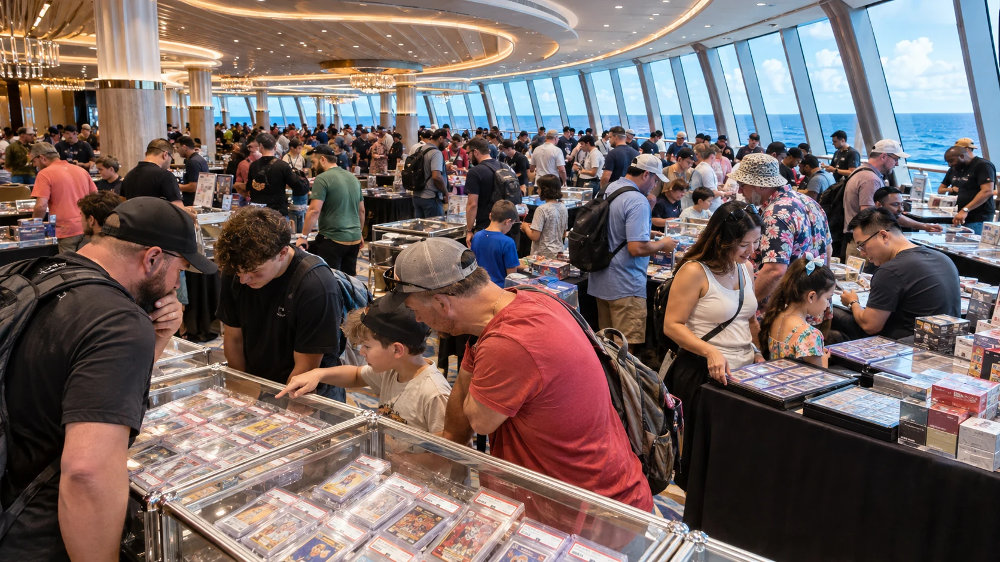
01Collect Around the Clock
Explore dedicated spaces for sports cards, TCG, non-sports and more. Find your next grail, then keep the conversation going.
Four days aboard Norwegian Viva. Dedicated collecting spaces, live breaks, extraordinary experiences, and a ship with room for 3,000+ guests.
Buy. Sell. Trade. Rip. Make memories with your favorite people.
Be first to hear about cabins, pricing, and special guests.
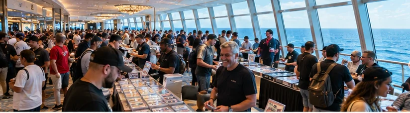
Dealers, grails, breaks and trades. Day and night.
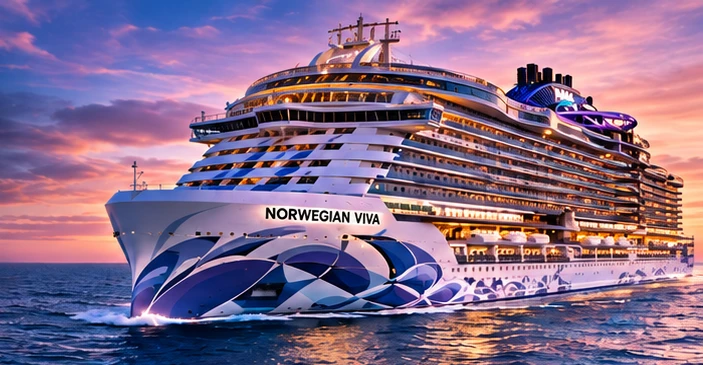
World-class dining, water park, a three-level go-kart speedway, casino, nonstop entertainment, and the Caribbean.
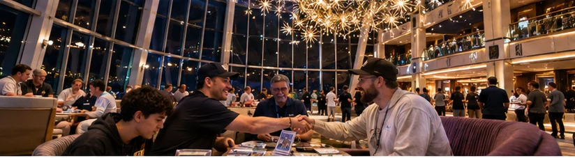
Friends, families and collectors who become your crew.
From dedicated collecting rooms to live breaks and late-night trades, HAUL brings the hobby into every part of your vacation. The show floor is where it begins, not where it ends.

01Explore dedicated spaces for sports cards, TCG, non-sports and more. Find your next grail, then keep the conversation going.
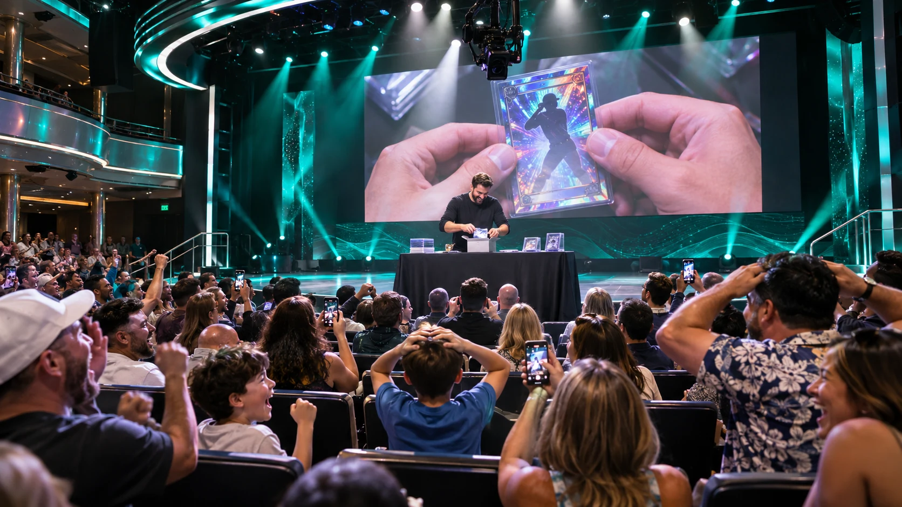
02Watch the big pulls unfold with the crowd around you. The excitement is better when you’re in the room.
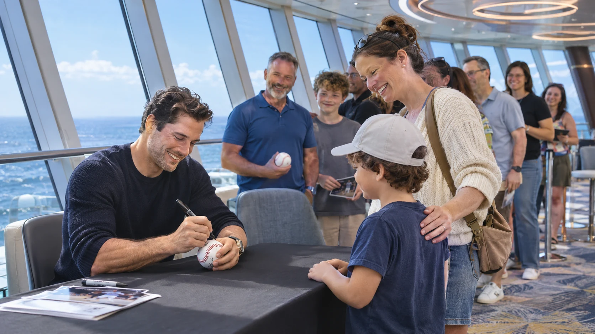
03Meet personalities from the worlds of sports and collecting. Guest lineup and appearances to be announced.
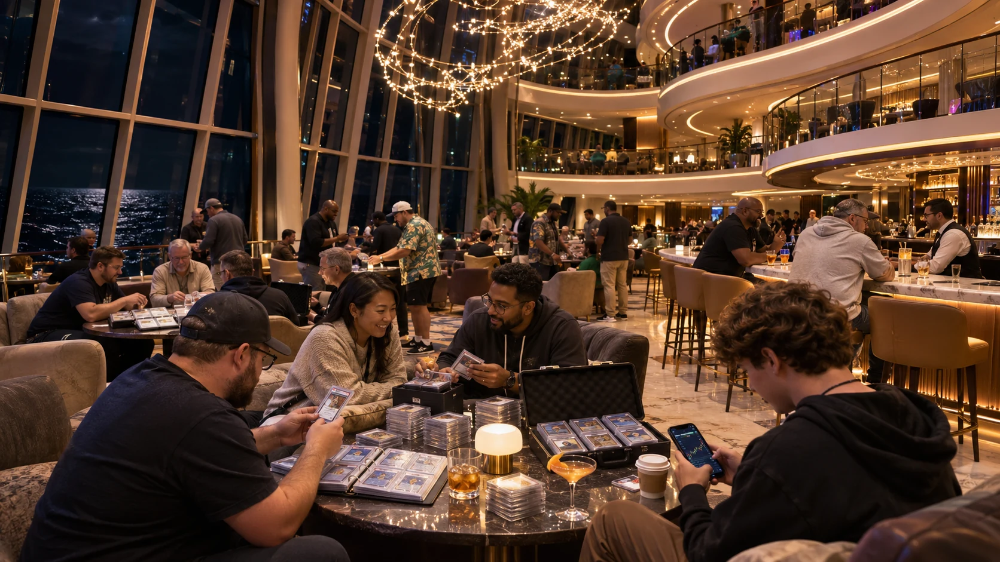
04Discover extraordinary cards, rare collectibles and the stories behind the pieces everyone wants to see.
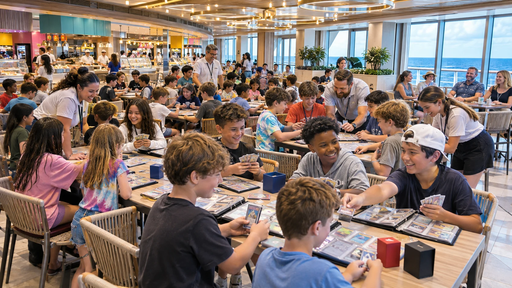
05A collecting experience built for the next generation, with supervised activities and new friends to meet.
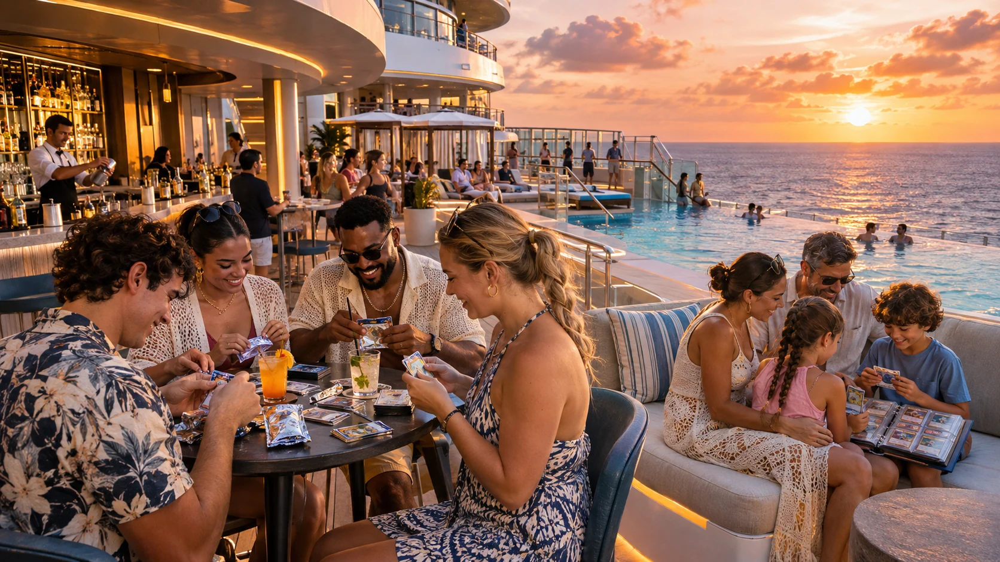
06The show continues over dinner, by the pool and into the night. Your favorite people make it unforgettable.
Concept imagery illustrates planned experiences; final programming and onboard locations are subject to confirmation.
Your collecting world meets Norwegian Viva. Between the trading, breaks and special events, discover everything that makes a Caribbean cruise worth taking.
World-class dining · Water park · Three-level go-kart speedway · Casino · Nonstop entertainment · The Caribbean
Concept imagery; exact onboard amenities and spaces are subject to confirmation.
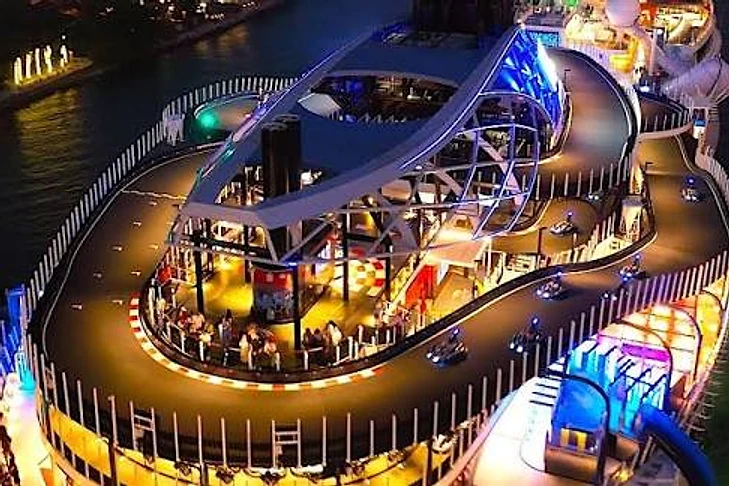
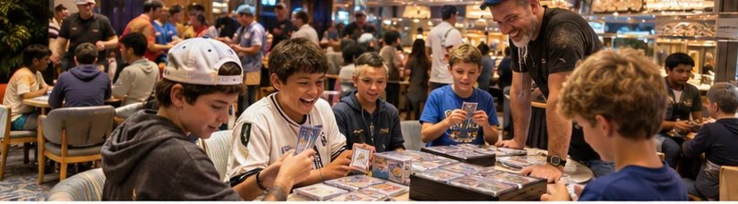
The kids will have an experience to call their own. HAUL plans supervised collecting activities and programming so parents can spend time exploring showrooms, trading, and reconnecting with their crew.
Kids Trade Show, scavenger hunt, Junior Breakers and Collector Challenges are planned concepts. Final age ranges, schedules and supervision details will be published before sailing.
Some events you attend once. Others become part of your life.
The people you meet. The trades you'll talk about for years. The late-night conversations. The memories your kids will never forget.
Come back with the same crew. Leave with new friends. The collections change. The kids grow up. The stories get better. But the tradition stays.
Come for the cards. Come back for the people.
Our inaugural guests will help shape a tradition from its very first sailing. We're designing a Founding Voyager program that recognizes the people who were there on day one and gives them reasons to return.
Join the Founding Voyage WaitlistFounding Voyagers will be the community that started it all. Here are the future benefits we’re planning for guests who sail with us in 2028.
Be among the first to hear about and book future HAUL sailings before general availability.
Planned early access to select your preferred cabin on future voyages, subject to availability.
Special recognition for the guests who were there from the beginning.
Additional Founding Voyager experiences and perks will be revealed as HAUL grows.
Founding Voyager privileges are planned, not yet guaranteed. They are intended for confirmed inaugural sailing guests, not waitlist signups. Priority booking and cabin selection will be subject to eligibility, availability, sailing schedules and published terms. Full details will be provided before booking opens.
Stay for everything else. Bring friends and family.
Join the waitlist →Connect with collectors throughout the voyage.
Dealer inquiry →Create activations people remember and share.
Sponsor inquiry →Build something lasting with your audience.
Partner inquiry →We're planning additional private security for HAUL's collecting areas alongside the ship's existing security operations. Storage and collectible-handling details will be shared before sailing.
Our working plan is February 4–7, 2028 aboard Norwegian Viva in the Caribbean. Dates and itinerary are subject to final confirmation.
Yes. We're planning supervised kids programming, along with family-friendly collecting experiences. Ages, staffing, and schedules will be announced ahead of sailing.
Planned dedicated showrooms cover sports cards, TCG, non-sports, and other collecting communities. Exact room assignments are still being developed.
Additional private security is planned for collecting areas. We'll publish handling and storage policies when finalized.
Cabins and package pricing have not been announced. Waitlist members will hear about bookings and inclusions as details are confirmed.
It's HAUL's inaugural February 2028 sailing. We're designing a Founding Voyager program for guests who sail with us from the beginning, including planned first access to future cruises, priority cabin selection, founding recognition, and more surprises to come. Benefits and eligibility are not yet final; joining the waitlist doesn't itself qualify.
Join the list for cabin news, experiences, and updates on the Founding Voyage.
Interested in exhibiting, sponsoring, or bringing your community? Tell us what you have in mind. We’ll carry these options into the live HAUL inquiry flow.
Tell us what kind of involvement you’re exploring.